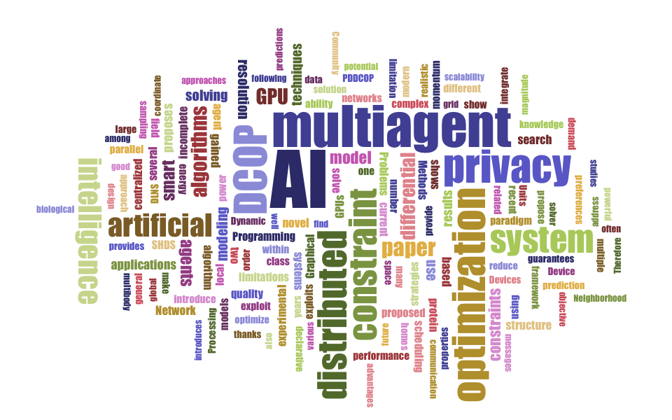
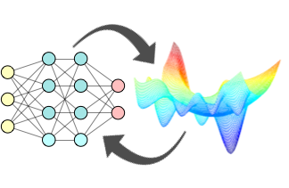
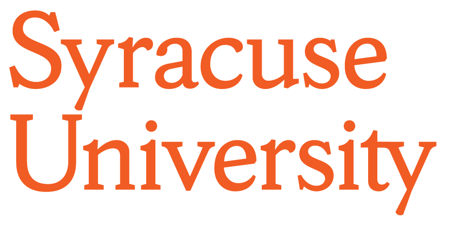

|
ResearchMy research is at the intersection of artificial intelligence (AI), optimization, privacy, and fairness.My recent work can be categorized broadly under two themes:
The word cloud on the right has been obtained on several recent abstracts of my papers. |
 |
Ferdinando Fioretto
Research Areas
Integration of Deep Learning and Optimization
|
Constrained optimization (CO) is in daily use in our
society, with applications ranging from supply chains
and logistics to electricity grids, organ exchanges,
marketing campaigns, and manufacturing to name only a few.
Although these problems are often NP-hard and computationally
challenging even for medium-sized instances, they constitute
fundamental building blocks for the optimization of many scientific
and industrial processes.
|
 |
Differential Privacy for ML and Decision Making
|
The use of rich data sets raises significant privacy concerns:
They often reveal personal sensitive information that can be exploited,
without the knowledge and/or consent of the involved individuals,
for various purposes including monitoring, discrimination, and illegal activities.
|

|
Trustworthy ML: Fairness and Privacy
|
Although Differential Privacy (DP) provides strong privacy
guarantees on the released data or systems, its wide adoption
among more federal agencies and public policy-makers presents a
key challenge: Without careful considerations, DP methods may
disproportionately impact minorities in important decision
processes that use private data, including allocation of funds,
therapeutics, and granting benefits and allowances. Specifically,
to protect underrepresented groups in data, DP and other
privacy-preserving methods must alter the overall demographic
representation which may have consequential effect on these
important decisions.
|
|
Sponsors
|
|
|
 |